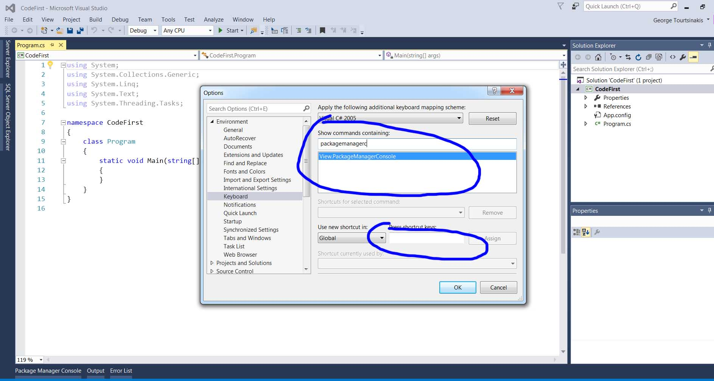
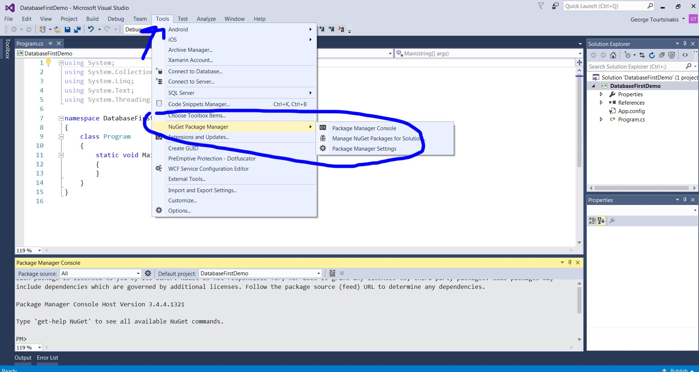
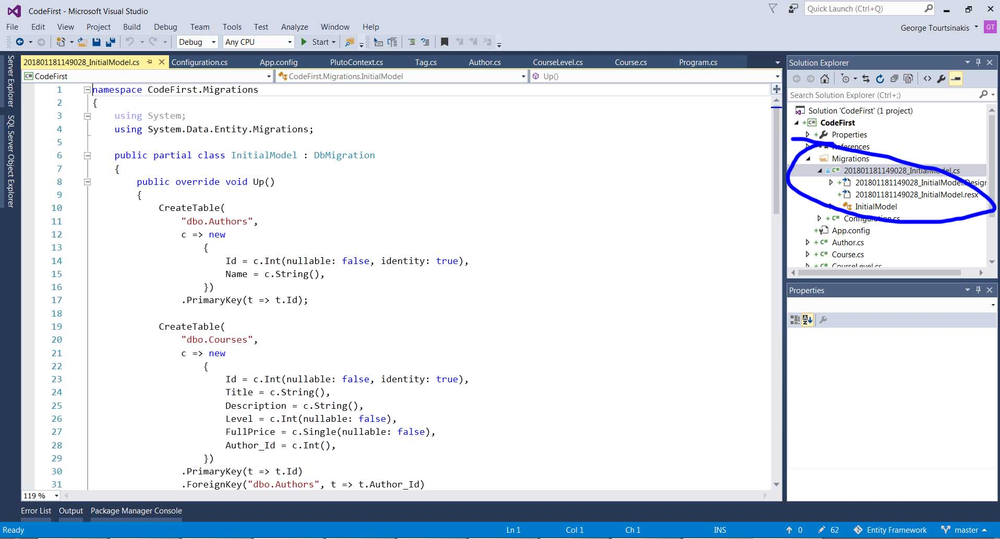
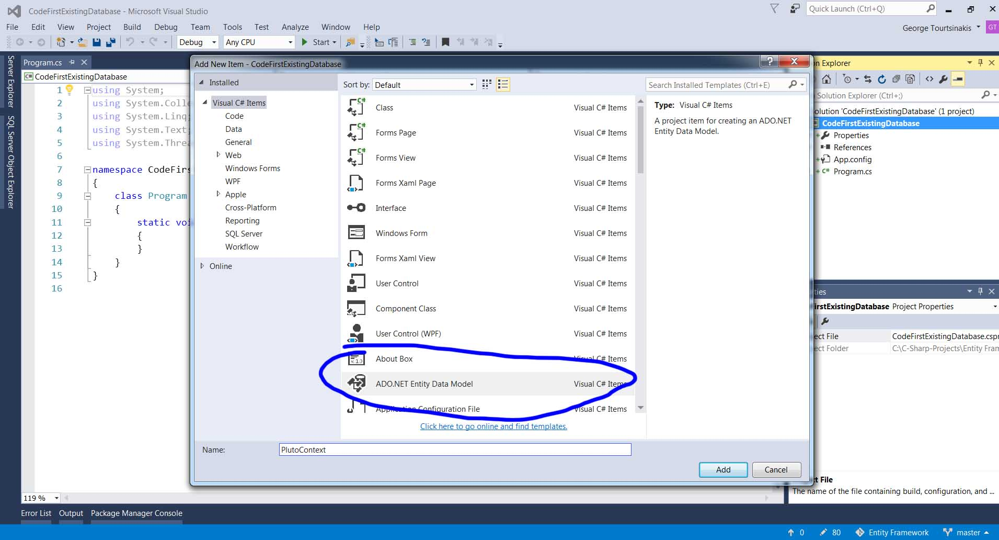
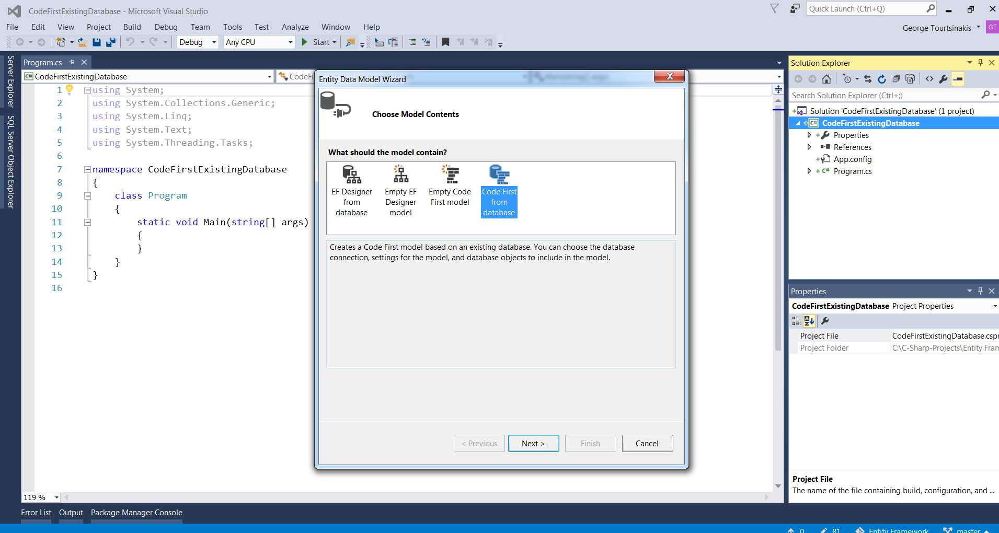
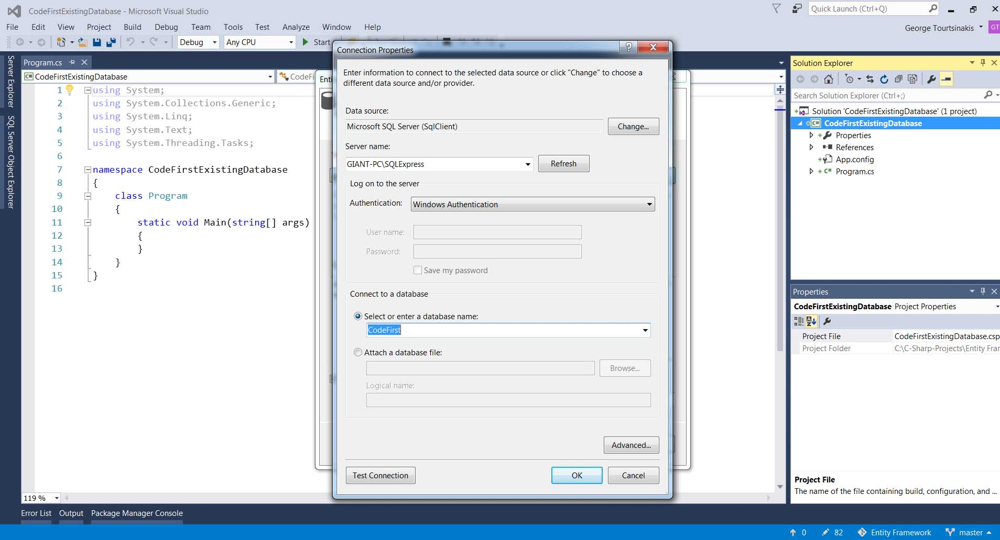
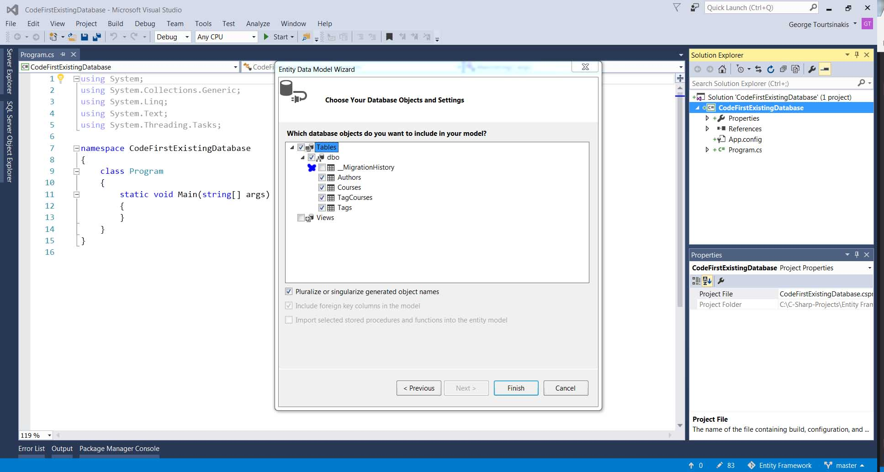
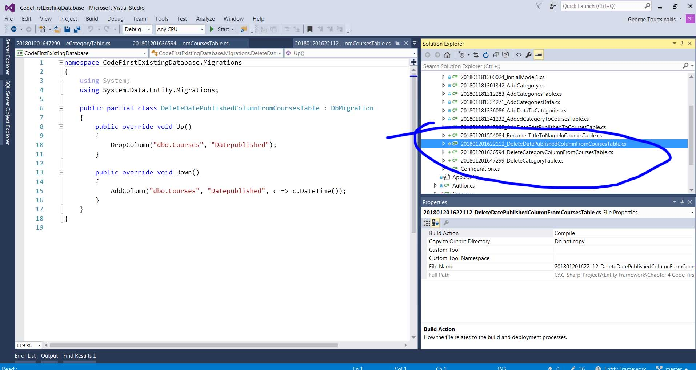
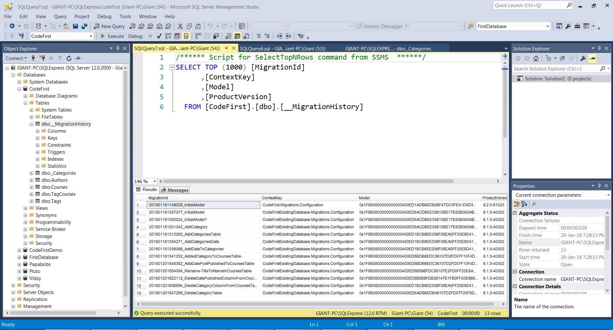
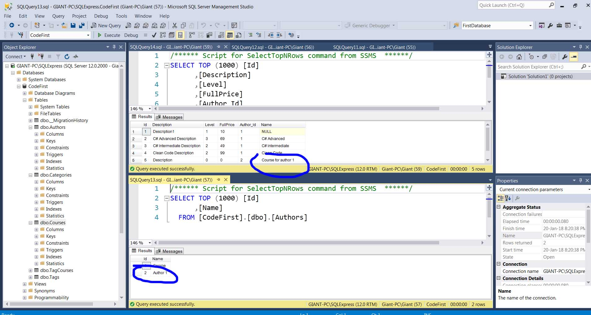

We can easily create shortcut in Visual Studio by going to Tools -> Options. We search for what we want and by pressing the shortcut as shown 
To use Entity framework we have to install it from Nuget Package Manager as shown . Then at Package Manager Console we write :
install-package EntityFramework
With code first workflow we write first our code classes, properties etc which is our model and then the db context which is a class with the database and derives from DbContext from Entity namespace.
public class PlutoContext : DbContext
{
}
Here we are gonna have a some Db sets. A Db set is a collection of objects that represent the tables in the database. With the below code we can access the Courses table in the database.
public virtual DbSetCourses { get; set; }
Go to application configuration file.
<connectionStrings>
<add name="DefaultConnection" connectionString="data source=Giant-PC\SQLExpress; initial catalog=PlutoCodeFirst; integrated security=SSPI" providerName="System.Data.SqlClient"/>
</connectionStrings>
If our name is different than the DbContext class we need to specify it as a constructor.
public PlutoContext()
:base("name=DefaultConnection")
{
}
We must enable the migrations at console.
First check application for errors in Debug before migation.
PM> enable-migrations
Then we add the migration and give it a name.
PM> add-migration InitialModelWe see the migration folder created. If entity framework since a property names Id will automatically figure out that's an identity column and a primary key.  Also enity framework will create the relation with foreign key if we have a class in a class.
public class Course
{
public int Id { get; set; }
public string Title { get; set; }
public string Description { get; set; }
public CourseLevel Level { get; set; }
public float FullPrice { get; set; }
public Author Author { get; set; }
public IList Tags { get; set; }
}
And it created
CreateTable(
"dbo.Courses",
c => new
{
Id = c.Int(nullable: false, identity: true),
Title = c.String(),
Description = c.String(),
Level = c.Int(nullable: false),
FullPrice = c.Single(nullable: false),
Author_Id = c.Int(),
})
.PrimaryKey(t => t.Id)
.ForeignKey("dbo.Authors", t => t.Author_Id)
.Index(t => t.Author_Id);
Finally we update the migartion to the database .
PM> update-database
We can use code first workflow alos with an existing database.
Existing DB -> Model (make changes) -> Migration -> Existing DB

Then code first from database. 
Then specify the connection String 
Choose all tables except migration history since we don t want a migration history table to be created. 
* * * * * * * * * * * * * * *
Migrations as we saw are used when we make changes to our model so they can applied to database.
PM> enable-migrations
PM> add-migration NameOfMigrationIf you run the migration with an empty database it going to sync with this model. If we have already the database we have to use a switch which is going to tell to entity framework that we all have these in our database so
PM> add-migration InitialModel -IgnoreChanges -ForceYou can only run one migration at a time.
PM> update-database
To delete a migration right click at the class created at migrations in solution explorer and delete. This applies only if you haven't update the database.
public virtual DbSet<Category> Categories { get; set; }
If the migration exists use -Force
This is a method that lets you create directly a query for your database.
public partial class AddDataToCategories : DbMigration
{
public override void Up()
{
Sql("INSERT INTO Categories (Name) VALUES ('Web Development')");
Sql("INSERT INTO Categories (Name) VALUES ('NET Framework')");
}
public override void Down()
{
}
}
To clean package manager console type cls
You go to the class you want to add the new property and then you create a new migration. You can see the changes in the migration.
public partial class AddedCategoryToCoursesTable : DbMigration
{
public override void Up()
{
AddColumn("dbo.Courses", "Category_Id", c => c.Int());
CreateIndex("dbo.Courses", "Category_Id");
AddForeignKey("dbo.Courses", "Category_Id", "dbo.Categories", "Id");
}
public override void Down()
{
DropForeignKey("dbo.Courses", "Category_Id", "dbo.Categories");
DropIndex("dbo.Courses", new[] { "Category_Id" });
DropColumn("dbo.Courses", "Category_Id");
}
}
Finally again you update-database
PM> update-database
If you add a DateTime property it must allow null. Since C# Datetime is a struct and can't be nullable to make it nullable you add ?
public DateTime? Datepublished { get; set; }
If you want to change a property you press F2 while you have chosen the name of it and then apply. Then add-migration MigrationName. Finally again you update-database.
BE CAREFULL! The below code will drop the table and create new string one and also have a nullable value which doesn't make sense to have a nullable title. So whatever data we have are going to be lost.
public override void Up()
{
AddColumn("dbo.Courses", "Name", c => c.String());
DropColumn("dbo.Courses", "Title");
}
Make nullable false :
public override void Up()
{
AddColumn("dbo.Courses", "Name", c => c.String(nullable:false));
DropColumn("dbo.Courses", "Title");
}
The first argument is the table,second old name, third new name,forth argument optional.
public override void Up()
{
RenameColumn("dbo.Courses","Title","Name")
}
After we add this name column we can populated it with the data we have.
public override void Up()
{
AddColumn("dbo.Courses", "Name", c => c.String(nullable:false));
SQL("UPDATE Courses SET Name = Title");
DropColumn("dbo.Courses", "Title");
}
Always make the reverse to Down method also if you need to Downgrade your database and not only make changes to Up().
public override void Down()
{
AddColumn("dbo.Courses", "Title", c => c.String(nullable:false));
SQL("UPDATE Courses SET Title = Name");
DropColumn("dbo.Courses", "Name");
}
First we delete the property from the class. Then we add the migration and update database. Here how the migration wii look :
namespace CodeFirstExistingDatabase.Migrations
{
using System;
using System.Data.Entity.Migrations;
public partial class DeleteDatePublishedColumnFromCoursesTable : DbMigration
{
public override void Up()
{
DropColumn("dbo.Courses", "Datepublished");
}
public override void Down()
{
AddColumn("dbo.Courses", "Datepublished", c => c.DateTime());
}
}
}
Let's suppoe we will delete the Category class.
namespace CodeFirstExistingDatabase
{
using System;
using System.Collections.Generic;
using System.ComponentModel.DataAnnotations;
using System.ComponentModel.DataAnnotations.Schema;
using System.Data.Entity.Spatial;
[Table("Courses")]
public partial class Course
{
[System.Diagnostics.CodeAnalysis.SuppressMessage("Microsoft.Usage", "CA2214:DoNotCallOverridableMethodsInConstructors")]
public Course()
{
Tags = new HashSet();
}
public int Id { get; set; }
public string Name { get; set; }
public string Description { get; set; }
public Category Category { get; set; }
public int Level { get; set; }
public float FullPrice { get; set; }
public int? Author_Id { get; set; }
public virtual Author Author { get; set; }
[System.Diagnostics.CodeAnalysis.SuppressMessage("Microsoft.Usage", "CA2227:CollectionPropertiesShouldBeReadOnly")]
public virtual ICollection Tags { get; set; }
}
}
public partial class DeleteCategoryColumnFromCoursesTable : DbMigration
{
public override void Up()
{
DropForeignKey("dbo.Courses", "Category_Id", "dbo.Categories");
DropIndex("dbo.Courses", new[] { "Category_Id" });
DropColumn("dbo.Courses", "Category_Id");
}
public override void Down()
{
AddColumn("dbo.Courses", "Category_Id", c => c.Int());
CreateIndex("dbo.Courses", "Category_Id");
AddForeignKey("dbo.Courses", "Category_Id", "dbo.Categories", "Id");
}
}
PM> add-migration DeleteCategoryTable
SQL("CREATE TABLE...")
namespace CodeFirstExistingDatabase.Migrations
{
using System;
using System.Data.Entity.Migrations;
public partial class DeleteCategoryTable : DbMigration
{
public override void Up()
{
CreateTable(
"dbo._Categories",
c => new
{
Id = c.Int(nullable: false, identity: true),
Name = c.String(),
})
.PrimaryKey(t => t.Id);
Sql("INSERT INTO _Categories (Name) SELECT Name FROM Categories ");
DropTable("dbo.Categories");
}
public override void Down()
{
CreateTable(
"dbo.Categories",
c => new
{
Id = c.Int(nullable: false, identity: true),
Name = c.String(),
})
.PrimaryKey(t => t.Id);
Sql("INSERT INTO Categories (Name) SELECT Name FROM _Categories ");
DropTable("dbo._Categories");
}
}
}
If we have made a migration that we didn't have to do we must create another migration to fix it. Don't delete the existing migration.
Imagine we had some migrations from beginning and we want to return to version 2 to fix something. The last migration for v2 is Migration F. start -> Migration A, Migration B, Migration C, v1-> Migration D -> Migration E, Migration F, v2 -> Migration G -> Migration H now
We must tell entity framework to go where we want
pm>Update-Database -TargetMigration:F
Now entity framework will run the Down methods to reverse what we have done and go where we want.
Imagine that we want to go to v2 which was in the picture.

We can see the migration history also at Management Studio 
We specify the target migration and entity framework reverts:
PM> update-database -TargetMigration:DeleteDatePublishedColumnFromCoursesTable Specify the '-Verbose' flag to view the SQL statements being applied to the target database. Reverting migrations: [201801201647299_DeleteCategoryTable, 201801201636594_DeleteCategoryColumnFromCoursesTable]. Reverting explicit migration: 201801201647299_DeleteCategoryTable. Reverting explicit migration: 201801201636594_DeleteCategoryColumnFromCoursesTable.After we make a change we go to the latest version again by running update-database.
To add data you want in the database add an empty migration and write SQL method to populate it with data.
When we enable-migrations visual studio automatically creates a Configuration.cs. We can use this method for dummy data to our database.
protected override void Seed(CodeFirstExistingDatabase.PlutoContext context)
{
context.Authors.AddOrUpdate(a => a.Name,
new Author
{
Name = "Author 1",
Courses = new Collection()
{
new Course() {Name = "Course for author 1",Description = "Description" }
}
}
);
}
We update the database and check the message we get
PM> update-database Specify the '-Verbose' flag to view the SQL statements being applied to the target database. No pending explicit migrations. Running Seed method.We see we have the data in our database. 
PM> update-database -Script - SourceMigration:0
In a real world scenario we might need to change the range of migrations included in the SQL script.
PM> update-database -Script - SourceMigration:Migr1 -TargetMigration:Migr2